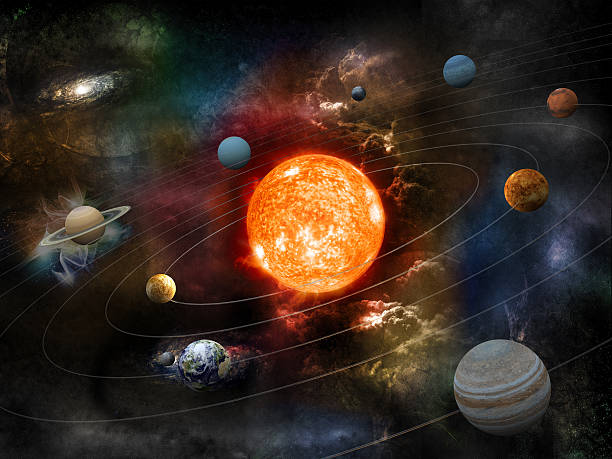
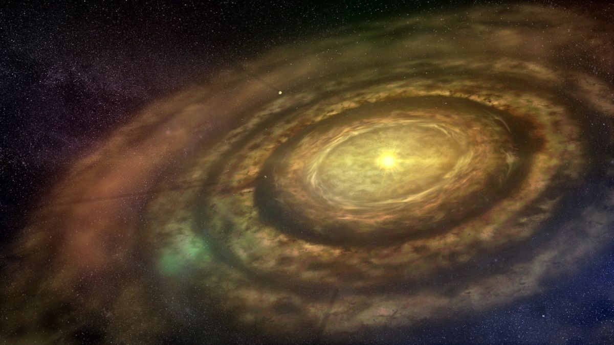

Kas ir Saules sistēma??
Saules sistēma ir planētu, pavadoņu, asteroīdu un komētu kopums, kas riņķo ap mūsu zvaigzni Sauli.
Kādas planētas ir Saules sistēmā?
Saules sistēmā ir astoņas planētas: Merkurs, Venera, Zeme, Marss, Jupiters, Saturns, Urāns un Neptūns.

Kā tā izveidojās?
Saules sistēma izveidojās aptuveni pirms 4,6 miljardiem gadu no gigantiska molekulāra putekļu un gāzu mākoņa, ko sauc par saules nebulozu. Šis mākonis bija sastāvējis no ūdeņraža, hēlija un smagākiem elementiem, kas tika radīti zvaigznēs, kas eksplodēja kā supernovas.
